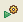
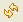

This Help topic gives an overview of the Jaxer Shell View.
Contents |
Introduction
The Jaxer Shell View provides you with an Ajax command-line console to interact with the Jaxer server. You can type single line commands or function definitions to execute on the Jaxer server. The console will then display your results.
Instructions
Displaying the Jaxer Shell View
To display the Jaxer Shell View:
- From the Window menu, select Show View > Other... to open a Show View window.
- On the Show View window, expand the Aptana folder and select Jaxer Shell.
- Click OK.
Aptana displays the Jaxer Shell View (shown below).
{kind=link}
Typing commands
Type your JavaScript commands into the top panel:
- Use tabs to indent your code without leaving the panel.
- Use print(...) to print a string (or anything that implements toString) back to the console.
The bottom panel displays the commands that Jaxer received and any output.
- Your input is displayed in green.
- Any output (from the print(...) function) is displayed in black.
- Any errors (exceptions) are displayed in red.
Running commands
Use the following buttons to run your commands on one or more servers:
- Click the Run All button to run your commands on all servers.
- Click the Run Selected button to run your commands on all selected servers.
- Click the Run All Open button  to run your commands on all currently open servers.
{kind=link}
{kind=link}
{kind=link}
Navigating your commands
Use the History drop-down list to navigate through your previous commands.
Managing the console
Use the following buttons to manage the console output:
- Click the Select Server button to select a server from the list.
- Click the Refresh Server  button to refresh the server.
- Click the Clear Console
 button to clear the console.
button to clear the console.
- Click the Save Session button to save your session.
{kind=link}
{kind=link}
{kind=link}